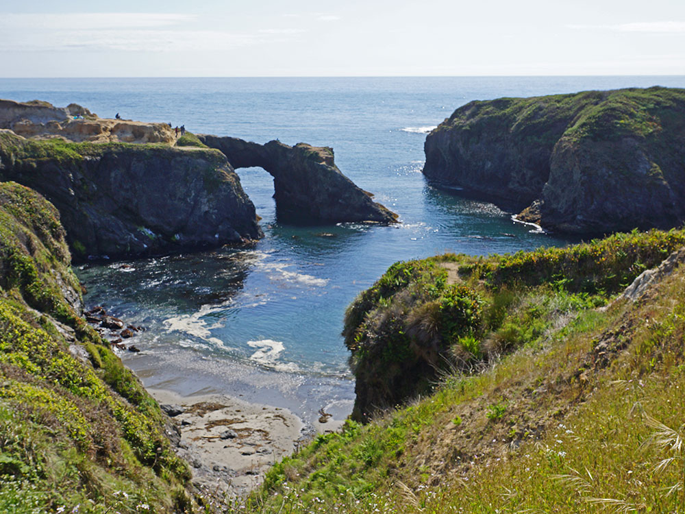
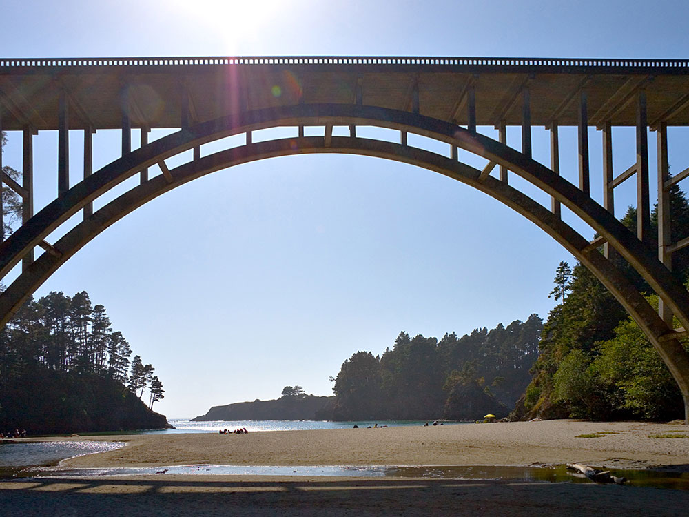
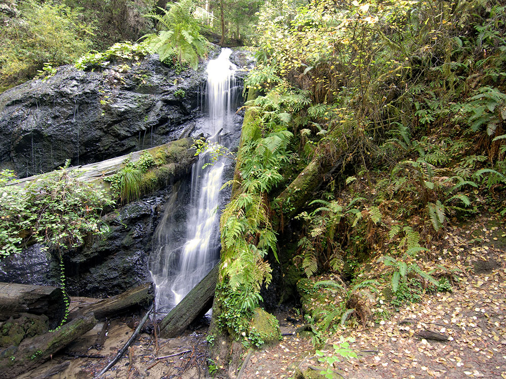
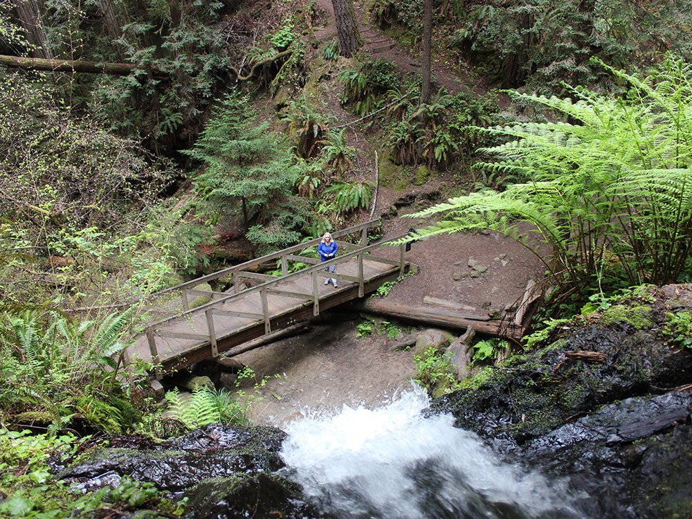

Park features 7,630 ft of rocky ocean shores .75 mi wide from north to south at its widest point, and extends for three miles from east to west
General Information
Some trails may be seasonally closed due to weather or maintenance
Senior discount: $7
Walk-in and bike access: Free
How to Get There
From Mendocino, CA (2 mi): Head north on CA-1 for approximately 2 miles; turn left onto Russian Gulch State Park Road and follow signs to the park entrance.
Overview
Russian Gulch State Park is a California state park on the Mendocino Coast, two miles north of Mendocino, known for its rocky headlands, a sandy cove beach, the Devil’s Punch Bowl blowhole and a fern-filled canyon with a 36-foot waterfall. Local groups, including the Native Sons of the Golden West, began a drive to turn the area into a park in 1928, and the park was founded in 1933 with funds from the county, the state and a private donor. The concrete arch Frederick W. Panhorst Bridge (1940) carries Highway 1 across the mouth of the gulch and is one of the park’s landmarks. People come to hike through redwoods to the waterfall, walk the headlands, explore tide pools and sea caves, kayak or dive in the cove, and camp.
Access
The park is on Highway 1, about 2 miles north of Mendocino and 7 miles south of Fort Bragg. To reach the day-use area and campground, turn west off the highway and follow the signed park road to the entrance. Trailers and motorhomes in the campground are limited to 24 feet. The Headlands Trail and the beach are west of Highway 1, while the Fern Canyon and waterfall trails lie east of the highway. Cell service can be limited, and the highway can be foggy, so allow extra driving time.
Seasons
The coast is temperate year-round, with fog that often burns off by mid-morning. Spring brings wildflowers to the headlands and strong flow in the waterfall, and summer is the busiest season, when the campground and ranger programs operate. Fall is a good time for hiking, with drier trails and clearer skies. In winter the campground is closed, but the stormy surf at the Punch Bowl and migrating gray whales offshore draw day visitors. Rain can make forest trails muddy, and some trails may close seasonally for weather or maintenance, so check park alerts before visiting.
Things to Do
Explore a Dramatic Stretch of the Mendocino Coast
Russian Gulch State Park is one of Northern California's most scenic coastal parks, located near the town of Mendocino. The park encompasses rugged ocean bluffs, a sheltered cove, redwood forests, fern-lined canyons, and diverse wildlife habitats. Its combination of coastal and inland environments makes it one of the premier outdoor destinations along California's North Coast.
Visit the Famous Russian Gulch Bridge Overlook
One of the park's most recognizable landmarks is the historic Russian Gulch Bridge, an iconic arch bridge spanning the mouth of Russian Gulch along Highway 1. Visitors can enjoy spectacular views of the bridge, rocky coastline, and Pacific Ocean from nearby overlooks and trails.
See Russian Gulch Waterfall
Deep within the park's forested canyon lies Russian Gulch Waterfall, a beautiful 36-foot waterfall surrounded by lush vegetation, ferns, and redwood trees. The waterfall is one of the park's most popular attractions and provides a rewarding destination for hikers.
Enjoy Coastal Recreation and Beach Access
The park features a protected cove with access to rocky beaches, tide pools, sea caves, and coastal bluffs. Visitors can enjoy beachcombing, wildlife viewing, photography, picnicking, and exploring the rugged shoreline along the Pacific Ocean.
Explore Redwood Forests and Scenic Canyons
Inland portions of the park contain redwood groves, shaded canyons, and riparian habitats that support numerous plant and animal species. Trails through these areas provide a peaceful contrast to the dramatic coastal scenery found elsewhere in the park.
Observe Wildlife and Marine Life
Russian Gulch State Park offers opportunities to observe deer, raptors, seabirds, harbor seals, sea lions, migrating whales, and other wildlife. The park's varied ecosystems make it a popular destination for birdwatching and nature photography.
Top Trails
Russian Gulch Waterfall Loop Trail
Length: Approximately 6 miles loop
Elevation Gain: About 700 feet
Difficulty: Moderate
This signature hike travels through redwood forests and scenic canyon terrain before reaching the park's picturesque waterfall. The loop combines lush forest environments with beautiful views of the surrounding landscape.
Headlands Trail
Length: Approximately 1.5 miles round trip
Elevation Gain: Minimal to Moderate
Difficulty: Easy
Following coastal bluffs above the Pacific Ocean, this trail offers outstanding views of sea stacks, rocky coves, marine wildlife, and the dramatic Mendocino coastline.
North Trail
Length: Approximately 3 miles round trip
Elevation Gain: Moderate
Difficulty: Moderate
This scenic route follows portions of Russian Gulch through forested canyon habitats and provides access to redwood groves, wildlife viewing opportunities, and connections to longer trail systems within the park.
Ocean View Trail
Length: Approximately 2 miles round trip
Elevation Gain: Minimal
Difficulty: Easy
A scenic coastal route featuring panoramic ocean views, bluff-top scenery, and excellent opportunities for photography, whale watching, and observing seabirds along the shoreline.
Visitor Centers
The park does not have a visitor center or museum. Information is available at the seasonal entrance kiosk, which is staffed in the busy season, and from the Mendocino District office of California State Parks. In summer, rangers lead interpretive and Junior Ranger programs, and a group recreation hall on the grounds hosts some activities. Trail maps and current trail alerts are posted on the California State Parks website.
Camping and Lodging
The park has a campground with standard sites, equestrian sites with corrals and a group site, with pay showers and firewood for sale. It is closed in winter, and reservations are strongly recommended in summer through California State Parks. For more options, nearby Van Damme State Park to the south and MacKerricher State Park near Fort Bragg also have campgrounds. Inns, bed and breakfasts, motels and vacation rentals are plentiful in Mendocino (2 miles) and Fort Bragg (7 miles), and Little River and Caspar lie in between. Lodging fills quickly in summer and on holiday weekends.
Sources: California State Parks official Russian Gulch State Park information, including details on the waterfall, coastal trails, campground facilities, redwood forests, beach access, and recreational opportunities.
https://www.parks.ca.gov/?page_id=436https://www.parks.ca.gov/?page_id=436
Additional information verified through Mendocino Coast visitor resources covering Russian Gulch Bridge, waterfall hikes, coastal bluff trails, wildlife viewing opportunities, tide pools, and outdoor recreation within Russian Gulch State Park.
https://www.visitmendocino.comhttps://www.visitmendocino.com
History
The name "Russian Gulch" was given to the area by U.S. government surveyors, in honor of the Russian fur trappers who founded Fort Ross 50 mi (80 km) to the south; according to a more specific local tradition, a deserter from Fort Ross lived at Russian Gulch. In the second half of the 19th century, schooners would frequently make dangerous stops in the cove to take on coast redwood lumber and passengers; the headlands still contain iron rings used to hold ropes and move lumber when these ships docked, and a mill made redwood shingles on what is now the site of a park recreation hall. Some of the land within what is now the park was farmed in the late 19th century, and in the mid-1920s a property developer from Los Angeles, F. O. Warner, bought land in the area with the intention of building a resort there. The Native Sons of the Golden West began a drive to turn the area into a park in 1928, and after funds were provided by A. Johnston, the county, and the state, the park was founded in 1933.
This article uses material from the Wikipedia article "Russian Gulch State Park", which is released under the Creative Commons Attribution-Share-Alike License 3.0. Additional information from California State Parks.






